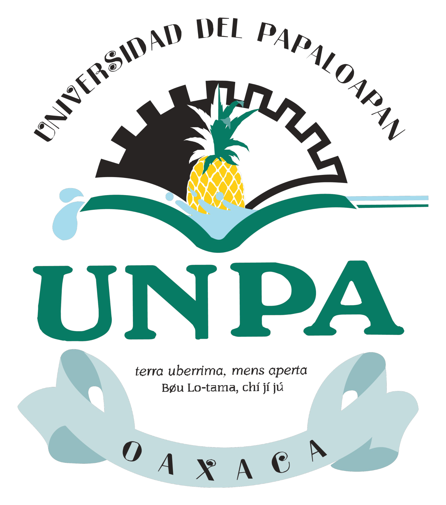

Centro Universitario de Desarrollo de Soluciones Tecnológicas
UNPA Tech Factory
Convertimos talento universitario en soluciones tecnológicas accesibles, sostenibles y listas para transformar instituciones educativas.

El desafío
Las instituciones educativas necesitan transformación digital que sí puedan sostener.
La digitalización de procesos, la integración de información y la automatización administrativa son urgentes, pero suelen depender de proveedores costosos, procesos manuales y sistemas que no conversan entre sí.
Trámites manuales y registros dispersos.
Desarrollo externo difícil de mantener.
Datos que no llegan en tiempo real.
Tecnología obsoleta o aislada.
Nuestra respuesta
Una fábrica universitaria de software con mentores, estudiantes y visión institucional.
UNPA Tech Factory formaliza una capacidad que la universidad ya ha demostrado: desarrollar, implementar y mantener soluciones reales con talento local.
Impacto que generamos
Resultados reales. Impacto real. Transformación real.
Casos de éxito
SICE: 17 años en producción
- Operando desde 2008.
- Plataforma crítica para la gestión académica y administrativa.
- Confiable, estable y en mejora continua.
17años en producción
Sistema de Gestión de Fichas de Admisión
Digitalización del proceso de admisión 2026
- 2,500 aspirantes atendidos.
- Registro digital y automatizado.
- Información en tiempo real para decisiones operativas.
- Reducción de actividades manuales.
Angular
Spring Boot
Base de datos relacional
3035 prerregistros
2613 fichas generadas
422 pendientes
Alerta del sistema
Nuestra trayectoria
Más de 17 años construyendo tecnología para la educación.
Modelo Canvas
Propuesta de valor, clientes y canales.
Propuesta de valor
Soluciones tecnológicas accesibles, personalizadas y con soporte continuo, creadas por talento universitario supervisado por expertos.
Segmentos de clientes
Universidades públicas y privadas, institutos tecnológicos, bachilleratos, centros de capacitación y organizaciones educativas.
Relación con clientes
Atención personalizada, capacitación, mesa de ayuda, soporte remoto y mantenimiento evolutivo.
Canales
Página web institucional, redes sociales, convenios universitarios, eventos académicos, ferias y recomendación de clientes.
Modelo Canvas
Recursos, operación y sostenibilidad financiera.
Socios clave
Universidad del Papaloapan, empresas tecnológicas, organismos gubernamentales, instituciones educativas y comunidades de software libre.
Actividades clave
Análisis de requerimientos, diseño, programación, pruebas, implementación y soporte.
Recursos clave
Estudiantes desarrolladores, profesores especialistas, infraestructura tecnológica, repositorios de software y metodologías ágiles.
Estructura de costos
Becas para estudiantes, infraestructura tecnológica, hosting, servidores, capacitación, licencias y gastos operativos.
Fuentes de ingresos
Desarrollo de software a medida, licenciamiento de plataformas, mantenimiento, capacitación y consultoría en transformación digital.
Objetivos de Desarrollo Sostenible
Alineados con impacto educativo, económico y tecnológico.
Educación de calidad
Formación práctica, competencias digitales y vinculación con proyectos reales.
Trabajo decente y crecimiento económico
Experiencia profesional, emprendimiento tecnológico y oportunidades laborales.
Industria, innovación e infraestructura
Infraestructura digital e innovación para instituciones educativas.
Línea de productos
Soluciones listas para crecer desde necesidades reales.
Admission Pro UNPA
Gestión integral de admisión, fichas, documentos y reportes.
UNPA Grades
Portal seguro para consulta de calificaciones e historial académico.
Inventory Control UNPA
Control de activos, responsables, reportes y trazabilidad.
Academic Planner UNPA
Planes semestrales, seguimiento docente, evidencias y reportes.
Activity Manager UNPA
Eventos académicos y culturales con estadísticas de participación.
Graduate Tracker UNPA
Encuestas, indicadores, empleabilidad y vinculación con egresados.
Viabilidad
Ya lo tenemos: talento, experiencia, tecnología y casos probados.
- Desarrolladores y diseñadores UX.
- Profesores mentores e interdisciplinarios.
- Infraestructura tecnológica.
- Experiencia comprobada de 17+ años.
- Tecnologías dominadas: Angular y Spring Boot.
Sostenibilidad
Un modelo que se fortalece cada ciclo.
Cada generación de estudiantes alimenta el modelo productivo. Los ingresos por proyectos, soporte, capacitación, licenciamiento y consultoría permiten reinvertir en nuevas soluciones e innovación.
Desarrollo
Ingresos
Capacitación
Nuevos estudiantes
Mejora continua
Rentabilidad
Modelo financiero sostenible y escalable.
Transformando talento universitario en innovación tecnológica.
UNPA Tech Factory no es una idea por empezar: es una capacidad demostrada, lista para formalizarse, escalar y convertirse en referente regional.
Juntos construimos el futuro. Educación sin límites.Mensaje para jurado
La propuesta en una frase
Formalizar UNPA Tech Factory permite convertir 17 años de experiencia institucional en una empresa universitaria capaz de resolver problemas reales, formar talento y generar valor sostenible para el sector educativo.